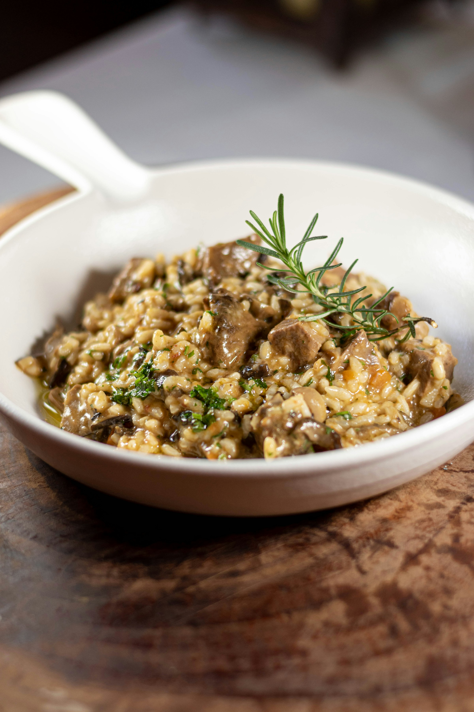

Wild Mushroom Risotto

How did rice, the staple of Asia, end up some 4,700 miles away, in wheat-focused Italy? It was due to the Silk Road trade when Arab traders brought rice from Asia to the Middle East. Many locals in Italy highly value this creamy rice delicacy, and even prefer it over the globally more renowned and loved pizza or pasta.
- Prep time - 10 minutes
- Cook time - 45 minutes
Ingredients
- 1 lb wild mushroom
- 8 tbsp butter
- 2 small shallots, minced
- 4 garlic cloves, minced
- 2 fresh thyme sprigs
- 1/2 tsp salt
- 1/2 tsp freshly ground pepper
- 3/4 cup dry white wine
- 1 tbsp lemon juice
- 5 cups chicken stock (or vegetable)
- 1 1/2 cups Lundberg Family Farm's Arborio Rice
- 1 cup heavy cream
- 1 cup freshly grated parmesan cheese
- fresh parsley minced, optional
Method
- Warm broth over low heat in a small saucepan.
- In a heavy skillet melt half of the butter over medium heat. Add mushrooms and shallots and saute until tender, about 8 minutes. Add garlic, thyme sprigs, salt and pepper and stir for an additional minute. Remove mushroom mixture from pan and set aside.
- Add remaining butter to pan over medium heat. Once melted, add rice and stir until rice begins to look translucent, 3-4 minutes.
- Add ¾ cup dry white wine and lemon juice and bring to a simmer, stirring constantly until liquid is absorbed. Add mushroom stock or 1 cup of vegetable broth and stir until almost all broth is absorbed. Continuing adding broth 1 cup at a time, and stir until liquid is almost absorbed. (This step takes 20-25 minutes.)
- Add mushrooms mixture into the rice and stir to combine. Gently stir in heavy cream and parmesan cheese and cook for an additional 5 min on low heat. Risotto should be creamy, but firm to the bite. Transfer risotto to a serving bowl and top with freshly ground pepper, shaved parmesan and fresh parsley.
Tips
- Don't rinse the rice—the rice's outer coating is where most of the starch is, and it's this rice starch that makes for a creamy risotto.
- The most involved part of making risotto is the constant stirring, but it's really not as bad as it sounds.